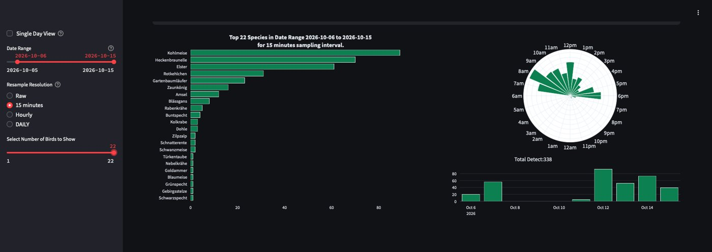
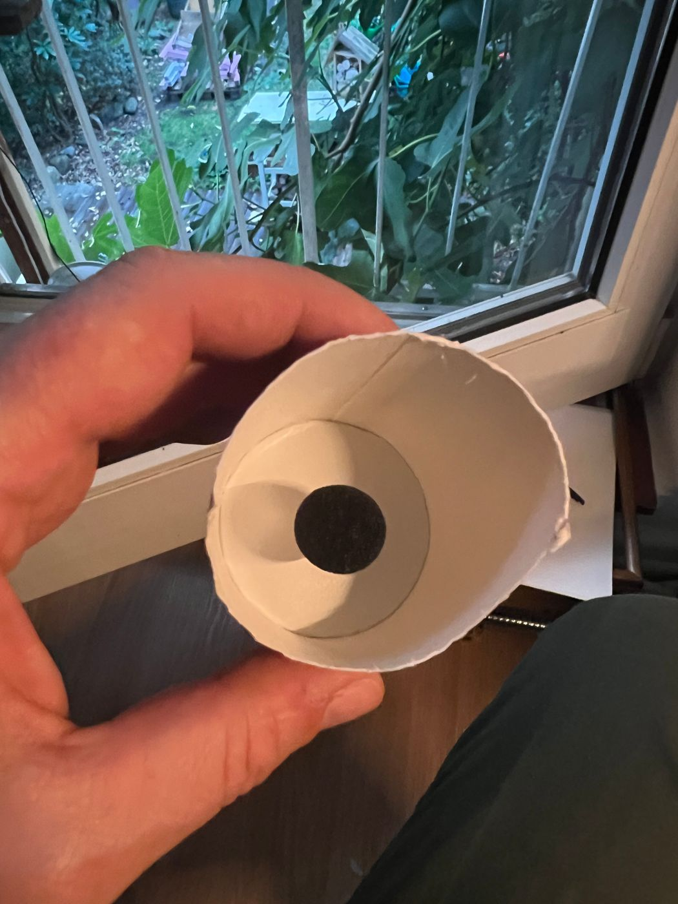
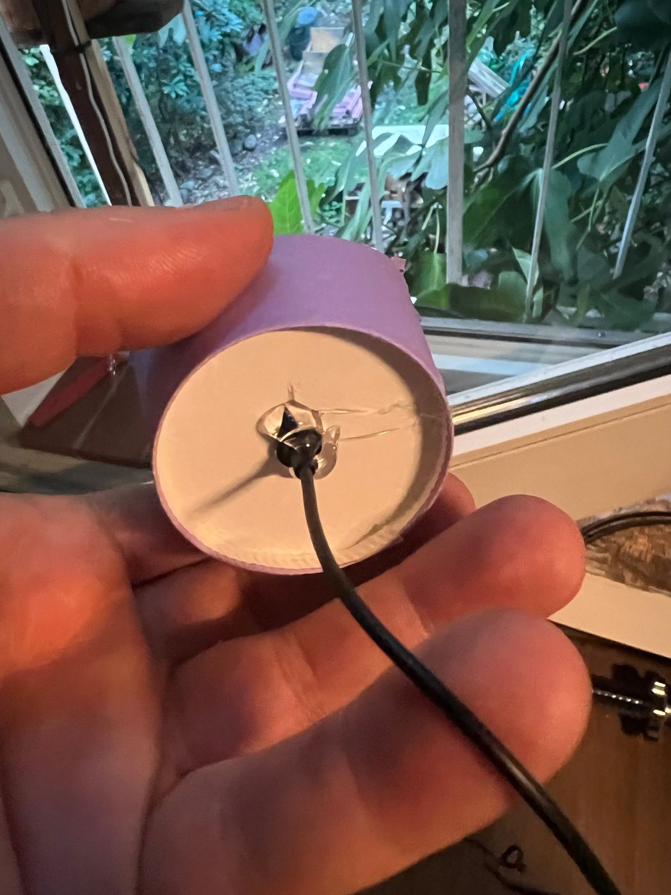

Bird sounds
BirdNET-Pi listens through the outdoor microphone, recognises bird songs with the BirdNET neural network and keeps a log with a web interface.
Setup
- Plug the USB microphone into the Pi and check that it is found:
arecord -l. - Install BirdNET-Pi by following the README of the project. I used the maintained Nachtzuster fork, which runs on a Pi 5 with the 64-bit OS.
- Open the web interface, set your location (only used to filter species) and choose the microphone.
- Set a password for the web interface right away.
First result
With the microphone on the outside, BirdNET-Pi picked up wild birds around the house from day one, including great tit (Kohlmeise) and short-toed treecreeper (Gartenbaumläufer).



Why the microphone is not inside
Inside the box it would mostly record the camera's and the birds' own rustling. Outside it hears the whole neighbourhood, which is the point of the species log.